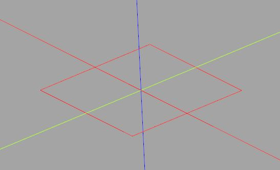
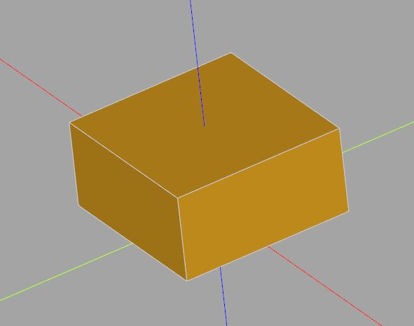

操作 BREP 實例
November 26, 2021在 CadQuery 要建立模型，Workplane 是方便的起點，因為它是個容器，用來管理頂點、邊、線、面、殼、實體等，也提供了許多便於建立模型的高階方法；然而，並不是任何任務都可以透過 Workplane 完成，有些操作也不適合使用 Workplane 管理，在這個時候，親手操作點、邊、線、面、殼、實體，就會是必要的。
BREP 對應類別
〈認識 BREP〉中談到點、邊、線、面、殼、實體，CadQuery 官方文件〈CadQuery Class Summary〉中列出的類別中，有著 cadquery.Vertex、cadquery.Edge、cadquery.Wire、cadquery.Face、cadquery.Shell 與 cadquery.Solid 等類別與之對應。
嚴格來說，cadquery.Vertex、cadquery.Edge、cadquery.Wire、cadquery.Face、cadquery.Shell 與 cadquery.Solid 並不是類別，而是 cadquery 將 cadquery.occ_impl.shapes 中對應的類別匯入之名稱。
cadquery.occ_impl.shapes 中對應的類別，是將 PythonOCC 進行封裝，而 PythonOCC 是 Open Cascade 的 Python 封裝；為了說明方便起見，以下直接以 Vertex、Edge、Wire、Face、Shell 與 Solid 來表示 cadquery.occ_impl.shapes 中的類別
Workplane 管理的點、邊、線、面、殼、實體等，就是 Vertex、Edge、Wire、Face、Shell 與 Solid 等建構出來的實例，更具體地說，就是 objects 或內部 pending 區保存之物件，也就是說，若能認識這些實例如何操作，就可以直接使用這些實例，完成 Workplane 不能或不適合建構的模型。
CadQuery 的 Workplane 相對於這些實作物件的關係，就類似於 jQuery 的 jQuery 相對於 DOM 物件間的關係，如果你使用過 jQuery 就會知道，有些需求還是得直接操作 DOM 物件。
建構 BREP 實例
Vertex、Edge、Wire、Face、Shell 與 Solid 等類別，提供了一些工廠方法來建構對應的 BREP 實例，首先從 Vertex 開始：
from cadquery import Vertex
vertices = [
Vertex.makeVertex(10, -10, 0),
Vertex.makeVertex(10, 10, 0),
Vertex.makeVertex(-10, 10, 0),
Vertex.makeVertex(-10, -10, 0)
]
for v in vertices:
show_object(v)
這會建立四個頂點，每個 Vertex 實例，都會有 X、Y、Z 特性，執行後在 CQ-editor 中會看到四個 + 圖案，代表四個頂點的位置，Vertex 實例有個 Center 方法，可以傳回向量物件，為 cadquery.occ_impl.geom.Vector 的實例，cadquery.Vector 實際上是 cadquery 匯入了 cadquery.occ_impl.geom.Vector 名稱。
cadquery.Vector 代表向量，支援向量運算，在許多場合，若想以向量觀點來進行幾何運算可以使用，這會非常的方便。
如果要建立 Edge 實例，可以透過 makeXXX 等方法，最基本的就是透過 makeLine 建立一條線作為邊，這個方法需要的就是兩個 Vector，邊的起點與終點：
from cadquery import Vertex, Edge
vertices = [
Vertex.makeVertex(10, -10, 0),
Vertex.makeVertex(10, 10, 0),
Vertex.makeVertex(-10, 10, 0),
Vertex.makeVertex(-10, -10, 0)
]
for i in range(4):
vector1 = vertices[i].Center()
vector2 = vertices[(i + 1) % 4].Center()
edge = Edge.makeLine(vector1, vector2)
show_object(edge)
這會顯示以下的圖形：

若要進一步地，將 Edge 實例組成 Wire，可以透過 Wire 的 assembleEdges：
from cadquery import Vertex, Edge, Wire
vertices = [
Vertex.makeVertex(10, -10, 0),
Vertex.makeVertex(10, 10, 0),
Vertex.makeVertex(-10, 10, 0),
Vertex.makeVertex(-10, -10, 0)
]
edges = [
Edge.makeLine(
vertices[i].Center(),
vertices[(i + 1) % 4].Center()
)
for i in range(4)
]
wire = Wire.assembleEdges(edges)
show_object(wire)
Edge 與 Wire 在 CQ-editor 顯示出來是相同的圖案，因此執行結果同上圖。
目前已經有 Wire 了，若要擠出，可以透過 Solid 的 extrudeLinear 等高階操作，例如：
from cadquery import Vertex, Edge, Wire, Solid, Vector
vertices = [
Vertex.makeVertex(10, -10, 0),
Vertex.makeVertex(10, 10, 0),
Vertex.makeVertex(-10, 10, 0),
Vertex.makeVertex(-10, -10, 0)
]
edges = [
Edge.makeLine(
vertices[i].Center(),
vertices[(i + 1) % 4].Center()
)
for i in range(4)
]
wire = Wire.assembleEdges(edges)
solid = Solid.extrudeLinear(wire, [], Vector(0, 0, 10))
show_object(solid)
extrudeLinear 接受的引數是外部 Wire、內部 Wire 以及擠出時的方向及距離，目前沒有內部 Wire，指定 [] 就可以了，Vector 實例就包含了方向及距離（向量的長度），執行結果如下：

如果想進一步從邊到建立實體呢？這可以透過 Face.makeFromWires 建立 Face，接著使用 Shell.makeShell 建立 Shell，最後以 Solid.makeSolid 建立 Solid：
from cadquery import Vector, Vertex, Edge, Wire, Solid, Shell, Face
# 建立頂點
vertices = [
Vertex.makeVertex(10, -10, 0),
Vertex.makeVertex(10, 10, 0),
Vertex.makeVertex(-10, 10, 0),
Vertex.makeVertex(-10, -10, 0),
Vertex.makeVertex(10, -10, 10),
Vertex.makeVertex(10, 10, 10),
Vertex.makeVertex(-10, 10, 10),
Vertex.makeVertex(-10, -10, 10)
]
# 面的頂點索引
faces_indices = [
[0, 3, 2, 1],
[4, 5, 6, 7],
[0, 1, 5, 4],
[3, 7, 6, 2],
[0, 4, 7, 3],
[1, 2, 6, 5]
]
faces = []
for face_indices in faces_indices:
edges = [
# 建立邊
Edge.makeLine(
vertices[face_indices[i]].Center(),
vertices[face_indices[(i + 1) % 4]].Center()
)
for i in range(4)
]
# 建立線
wire = Wire.assembleEdges(edges)
# 建立面
face = Face.makeFromWires(wire)
faces.append(face)
# 建立殼
shell = Shell.makeShell(faces)
# 建立實體
solid = Solid.makeSolid(shell)
show_object(solid)
在建立 Face，線必須共平面，對於方才擠出的方塊而言，每個面的四個邊一定是共平面，因此在這邊可以用來建構 Face，頂點的順序是繞 Face 朝外法向量呈逆時針，執行結果與上圖相同。
objects 與 pending
視情況而定，你可以搭配 Workplane 來管理自行建構的 BREP 實例，透過 add 方法，可以將 BREP 加到 objects 中管理，透過 toPending，可以將 objects 中的實例放到 pending 區；相對地，你也可以在操作 Workplane 進行高階操作後，取出 objects 中的實例，來做細部的控制，或者加入另一個 Workplane，像這類操作綜合運用，就可以在建構模型更加靈活。
對於其他的多面體，若要求邊一定是共平面，可以使用三角形，因為三角形必然共平面，進一步地，可以將以上範例重構為通用函式，指定頂點與三角面的頂點索引，自動建立多面體，這就之後來談了。